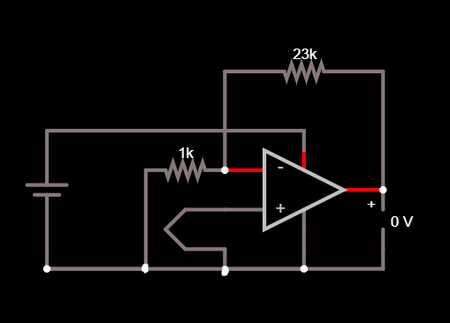
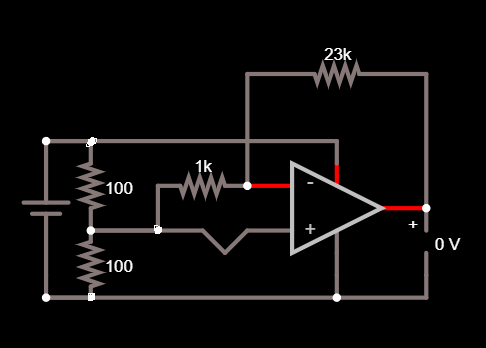

Thermocouple amplifier circuit
This is a smaller project of mine that was a good introduction to analog electronics, and a good way for me to practice using op-amps.
A couple of years ago I learned about the thermoelectric effect. I thought it was so cool that you could create a voltage potential across two dissimilar conductors just by creating a temperature differential. I wanted to make a rudimentary temperature sensor using this effect.
I knew I was going to likely be using a thermocouple as the temperature sensor, as the point of this project was to learn about the thermoelectric effect. I settled on a type K thermocouple, as a) everyone else seemed to be using them and b) they were in stock at my local electronics shop. A type K thermocouple is made by joining 2 different nickel alloys: chromel and alumel, which contain a bit of chromium and aluminum respectively. It produces a voltage potential of 41 µV/°C, which is a way lower voltage than what my multimeter can measure, so I knew I would need a circuit to amplify this. I chose to use a non-inverting op-amp as my amplifier, because I wasn't super familiar with different types of amplifier circuits, and a circuit that took a voltage and multiplied it by a gain factor that could be set by some resistors looked like a good option to me.
I designed my circuit on paper first, but my lack of knowledge on op-amps

For the op-amp I used a JRC 4565 that I had salvaged from a stereo system and I made a 23k resistor out of a 22k and a 1k resistor. I built it up and it didn't work, it always pulled the output of the op-amp to its supply voltage (minus the buffer, as the op-amp isn't rail-to-rail). I tried a bunch of things to try and make this circuit work. I tried different op-amps, different gain factors, and different supply voltages, and none of it fixed it. I learned that what was wrong with my circuit is that the voltage at the non-inverting input was outside of the common-mode range of the op-amp: the region where the op-amp works properly. It is defined as beginning at some offset above the negative voltage supplied to the op-amp to some offset below the positive voltage supplied to the op-amp. Since I was supplying the op-amp with 9V and ground, and the thermocouple produces a tiny voltage, it was outside of the common-mode range explaining this weird behaviour.
This was the answer that people gave me when I asked on electronics forums. I sort of understood it, but I didn't know how to fix it. I just wasn't experienced enough with electronics to find a solution, and I was also working on some more interesting (and more successful) projects, so unfortunately, I abandoned this project for almost 2 years.
I did all that work in the summer of 2019. However, a few weeks ago, I learned that op-amps were typically powered by +/-12V in electronics engineering laboratories, instead of just +12V and ground. I started thinking about how I could power an op-amp with a pseudo-negative voltage using a single supply, as I only had a single variable lab bench power supply available. I realized that I could power the op-amp as I was before using +12V and ground, but have the ground references of the input voltage be set to half the supply voltage using a resistor voltage divider. With this, I realized that I could finally fix the issue that had stopped this project for almost 2 years!

When I tested this, the circuit did still output a higher voltage than I was expecting. I was expecting it to put out close to 0V, but it actually put out around 120mV (this may be because I didn't set the output bias of the op amp, which could really have an effect when amplifying microvolt-level signals). The output voltage did, however, increase when I heated up the tip of the thermocouple by breathing on it or holding it in my hand (being careful not to touch the metal junction). The output voltage also decreased when I blew on it and touched the junction to cold objects. I still need to do some analysis and tinkering with this circuit, but I am quite happy with how it's working right now, and I'm happy that I was able to (eventually) solve the problem the circuit was having and actually see the thermocouple working.